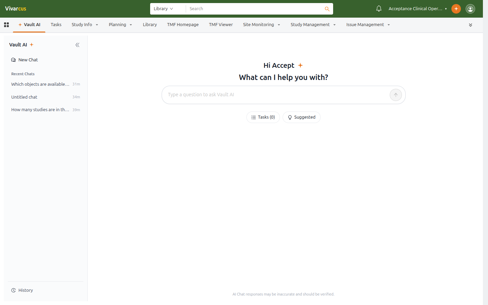

What Is Vault AI
Vault AI is an AI assistant built into Vivarcus that reads the current Vault's data — studies, documents, tasks, people, and organizations — and answers your questions in natural language. Instead of hopping between lists and detail pages, just ask, e.g. "How many studies are in this vault?" or "Find documents updated in the last 7 days."
Vault AI can:
- Query & answer: search Vault data (studies, documents, tasks, etc.) based on your question and answer in natural language, with record cards that jump to the filtered record list.
- Summarize records: open any record and generate a structured summary (numbers, status, milestones, to-dos) in one click.
- Translate records: translate record content into another language.
- Contextual chat: start a conversation anchored to a specific record; questions and answers stay scoped to that record.
- Execute tasks: in Vaults where an administrator has enabled workflow task execution, Vault AI can complete authorized action tasks.
Two Entry Points
| Entry | Location | Purpose |
|---|---|---|
| Vault AI tab | Vault AI tab in the application tab bar | Full-page chat: browse history, start new chats, view task execution status |
| Vault AI chat button | Top-right header, next to Notifications | Floating panel: ask quickly without leaving the current page |
The header button's floating panel is context-aware: with no record open it prompts "Open a record to chat with Vault AI"; opened on a record detail page, it switches to that record's dedicated conversation. See Using Vault AI in Record Context.

*The Vault AI tab: conversations in the left sidebar, a question input in the center.*
Safety & Boundaries
- Same permissions: Vault AI queries data as you, and only returns records you are allowed to view.
- Admin enablement: Vault AI is enabled by an administrator in Vault AI Settings; the entry points are hidden in Vaults where it is off.
- Verify responses: AI responses may be inaccurate or outdated. The "AI Chat responses may be inaccurate and should be verified" notice at the bottom always applies; confirm critical data on the record detail page.
Get Started
- Open the Vault AI tab, or click the Vault AI button in the header on any page.
- Type a question, or click Suggested for example questions.
- Use the record card in an answer to jump to the filtered record list.
Next: Chatting with Vault AI.